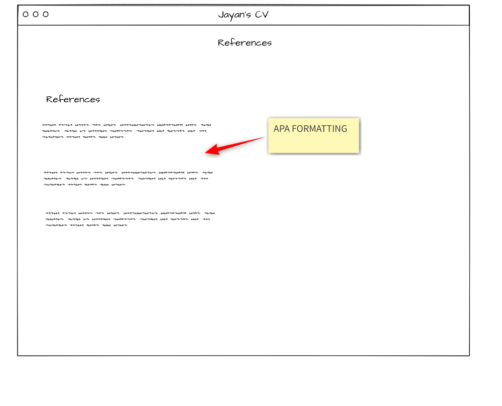
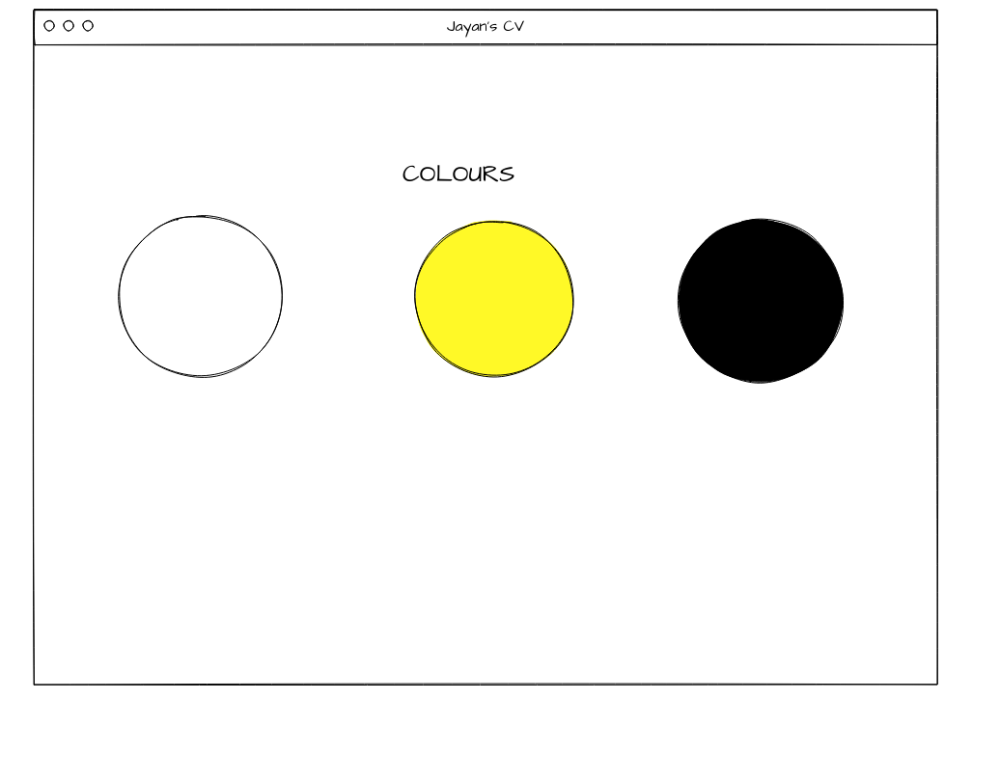

The home page is the splash/introductory page that introduces persons to the site. It helps them to understand what the site is about

This is the page that contains my resume, vision and mission statement

The personal Development page contains my strenghts and my thoughts on a book titled Twelve Pillars.

On this page I speak about my Hobbies, likes, dislikes and my personality.

These are the references for the tools and materials I have used to create my webpages
These are the colours for the theme of the webpage. The webpage is of a simple design using the colour yellow as an highlight to impotant aspects or texts
The target audience for this webpage are employeers, my collegues or an html enthusiast that wants to view a simple webpage and the features used on this webpage are videos, images, gifs and external links.
Back to Top